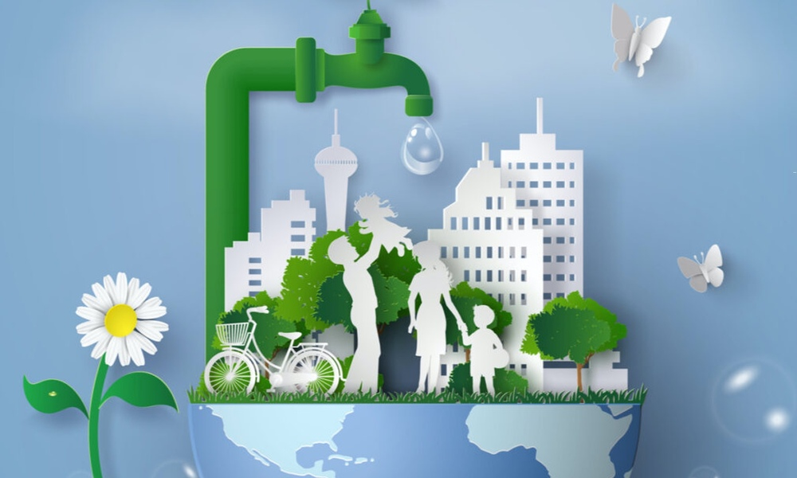

Tipos de agua
Agua dulce. Es agua con un bajo porcentaje de sales minerales. No tiene un sabor dulce, sino que se la llama así porque su nivel de salinidad es bajo.
Agua salada. Es agua con un alto porcentaje de sales minerales disueltas. Se encuentra en mares y océanos.Agua salada. Es agua con un alto porcentaje de sales minerales disueltas. Se encuentra en mares y océanos.
Agua salobre. Es agua con un porcentaje intermedio de salinidad, mayor que en el agua dulce pero menor que en la salada.
Agua negra. Es agua que está contaminada con orina y heces de animales. Se la suele encontrar cerca de establecimientos de cría de ganado.
Agua gris. Es agua que ya fue utilizada con fines domésticos pero puede volver a usarse para algún otro uso domiciliario. Por ejemplo, en muchos lugares el agua usada en el lavatorio del baño se reutiliza para cargar la mochila del inodoro y, de esa manera, se ahorra agua potable.
Agua residual. Es agua contaminada por acción de los seres humanos.
Agua potable. Es agua apta para el consumo humano, tanto para beber como para preparar alimentos o comidas. El agua potable es poca en comparación con las grandes masas de agua no potable, como la del mar o la lluvia. Puede encontrarse de manera natural, o se la puede potabilizar para quitarle las sustancias que pueden ser peligrosas para el consumo.
FUNCIONES DEL AGUA
El agua cumple funciones vitales en el planeta, tanto en los ecosistemas acuáticos como en los terrestres. Es un medio vital de transporte de nutrientes y es indispensable para la fotosíntesis de las plantas.
Constituye el medio vital para la mayoría de las células del cuerpo.
Transporta las sustancias disueltas y compone un gran porcentaje de la sangre.
Facilita la excreción de sustancias a través de la orina, las heces y el sudor.
Mantiene y regula la temperatura corporal.
Brinda electrolitos y minerales indispensables para el funcionamiento eléctrico del organismo.
